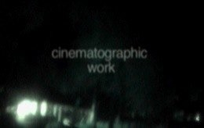
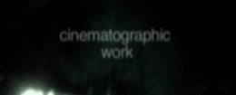

Artists in cooperation
Łukasz Gutt, DOP - graduated Camerimage Film School, WRiTV Katowice Film School and Ekran course in Wajda Master School of Film. Author of awarded music videos, documentaries and shorts. Co-founder of Relativo Cinema in 1998.
Karol Czyż, DOP - young cinematographer from WRiTV Katowice Film School (also studied Ethnography at Warsaw University). Has been working for MTV, Viva, TVN. Cinematographer of “The Runner”, “37th” (in production), various tv series. Traveller.
Mateusz Skalski, DOP - talented cinematographer, graduated WRiTV Katowice Film School in Bogdan Dziworski class. Experience in cinematography Well known as stills photographer on various film sets.
CINEMATOGRAPHERS



Copyright by Jan Przyluski 2008
Order DVD’s: studio@warszawacentralna.pl
DIRECTORS
+ EDITORS, GRAPHIC DESIGNERS
Jan Przyluski - producer, director and cultural anthropologist. Owner and coordinator of Studio Warszawa Centralna. Co-founder of Relativo Cinema in 1998. Graduated Cultural Anthropology at Warsaw University, actually writing PhD at Institute of Art (Polish Academy of Science).
Daniel Bauman - wild young director and photographer. Studies at Classical Philology in Warsaw University. His Nudes are pearls of photography from Warsaw Praga district.
Bartosz Łukasiewicz - visual artist, graphic designer, performer
Jan Przyluski - also as editor
Avaliable DVDs:
“Cinematography by Lukasz Gutt”
“Directer/Edited by Jan Przyłuski”
“The Differences. Live Art”, 2006
“Mateusz Skalski. Demoreel” (comming soon)
“Karol Czyz. Demoreel” (comming soon)